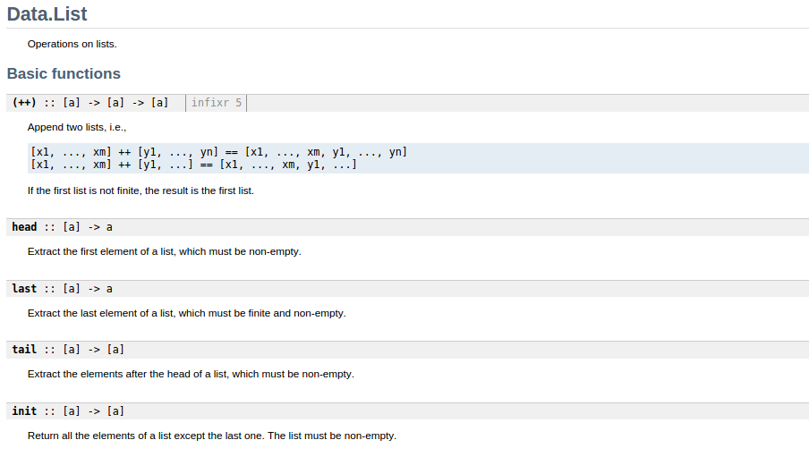
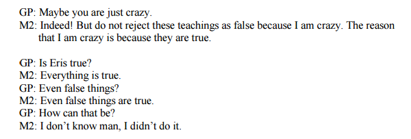

April 19, 2014
Led Scala dev teams at Gaiam, Precog, & Simple Energy
Finally started using Haskell for real work in 2014
Interrupt me!
{ True, False }{ -2147483648, ..., 2147483647 }Type is purely a concern of static analysis.
id :: ∀ a. a -> a
:: is pronounced “has type”∀ is pronounced (and may be written) forall“Write down the definition of a polymorphic function on a piece of paper. Tell me its type, but careful not to let me see the function’s definition. I will tell you a theorem that the function satisfies.” –Wadler, 1989
asdf :: ∀ a. a -> a -> a
asdf :: ∀ a b. a -> b -> a
asdf :: ∀ a b. (a, b) -> a
“Write down the definition of a polymorphic function on a piece of paper. Tell me its type, but careful not to let me see the function’s definition. I will tell you a theorem that the function satisfies.” –Wadler, 1989
Note that this only says “I will tell you a theorem.”
asdf :: ∀ a b. (a -> b) -> [a] -> [b]List gives the implementer too much information, and the caller too little.asdf :: ∀ a b. (a -> b) -> [a] -> [b]
asdf f [] = []
asdf f (x : _) = [f x]
(and many more)
asdf :: ∀ a b. (a -> b) -> [a] -> [b]
firsts :: ∀ a b. [(a, b)] -> [a]
firsts xs = asdf fst xs
-- firsts = asdf fst
class Functor f where
fmap :: ∀ a b. (a -> b) -> f a -> f b
instance Functor List where
fmap :: ∀ a b. (a -> b) -> [a] -> [b]
fmap f [] = []
fmap f x : xs = f x : fmap f xs
firsts :: ∀ f a b. Functor f => f (a, b) -> f a
firsts = fmap fst
class Foldable f where
foldr :: ∀ a b. (a -> b -> b) -> b -> f a -> b
class Monoid a where
mempty :: a
mzero :: a -> a -> a
foldMap ::
∀ f m a. (Foldable f, Monoid m) =>
(a -> m) -> f a -> m
class Functor f where
-- | Functor laws!
--
-- >>> fmap id == id
-- >>> fmap (f . g) == fmap f . fmap g
--
fmap :: ∀ a b. (a -> b) -> f a -> f b
-- | reverse a list
--
-- >>> import Test.DocTest.Prop
-- >>> prop $ \xs ys ->
-- rev (xs ++ ys) == rev ys ++ rev xs
--
-- >>> prop $ \xs -> rev (rev xs) == xs
--
rev :: ∀ a. [a] -> [a]
asdf :: ∀ a. a
This literally says, “all propositions are true.”

error :: ∀ a. String -> a
“Functional programmers often reason about programs as if they were written in a total language, expecting the results to carry over to non-total (partial) languages. We justify such reasoning.” – Danielsson et al. 2006
brokenHead :: ∀ a. [a] -> afromJustAwful :: ∀ a. Maybe a -> astupIdx :: ∀ a. [a] -> Int -> ahorkl1 :: ∀ a. (a -> a -> a) -> [a] -> adata JsonRendering a =
JsonRendering a (a -> Data.Aeson.Value)
jsonArray ::
∀ f a. (Foldable f) =>
f (JsonRendering a) -> Data.Aeson.Value{-# LANGUAGE ExistentialQuantification #-}
data JsonRendering =
∀ a. JsonRendering a (a -> Data.Aeson.Value)
jsonArray ::
∀ f. (Foldable f) =>
f JsonRendering -> Data.Aeson.Valueconst :: ∀ a b. a -> b -> a
const a _ = astatic <A, B> Function<B, A> constf(A a) {
return (B b) -> a;
}def constf(a)
lambda do |b|
a
end
end
trait Monoid[A] {
def mempty: A
def mappend(a0: A, a1: A): A
}
trait Functor[F[_]] {
def fmap[A, B](f: A => B)(fa: F[A]): F[B]
}
// this works
interface Monoid<A> {
A mempty();
A mappend(A a0, A a1);
}// This doesn't work. At all.
interface Functor<A> {
<B> Functor<B> fmap(Function<A, B>);
}
class MyList<A> extends Functor<A> {
public <B> MyList<B> fmap(Function<A, B>);
}
List<String> result =
Arrays.asList("Larry", "Moe", "Curly")
.stream()
.map(s -> "Hello " + s)
.collect(Collectors.toList());
// result will be a List<String> containing
// "Hello Larry", "Hello Moe" and "Hello Curly"
static <T> Collector<T,?,List<T>> toList()